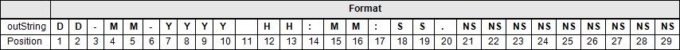

Diese Funktion konvertiert ein Datum vom Datentyp DTL in eine Zeichenkette vom Datentyp STRING im traditionellen Deutschen Format (DE) (DD MM YYYY ...).
| LGF_DTLToString_DE (FC) | ||||||||
|---|---|---|---|---|---|---|---|---|
| DTL | date | Ret_Val | String | |||||
| Char | separator | |||||||
| Char | separatorDateAndTime | |||||||
| Bezeichner | Datentyp | Beschreibung |
|---|---|---|
| date | DTL | Datum zum Konvertieren im Format DTL |
| separator | Char | Trennzeichen zwischen den Komponenten des ausgegebenen Datums. |
| separatorDateAndTime | Char | Trennzeichen zwischen den Komponenten Datums und Zeit. |
| Bezeichner | Datentyp | Beschreibung |
|---|---|---|
| Ret_Val | String | Ausgegebenen Zeichenkette entsprechend dem traditionellen Deutschen Format (DE). Beispiel: `22-01-2019 14:07:57.696417000` |
Der Baustein liest ein Datum vom Datentyp DTL ein und konvertiert die einzelnen Komponenten des Datums (Jahr, Monat, Tag, Stunde...) in eine Zeichenkette und gibt diese im traditionellen Deutschen Format (DE) aus. Das Trennzeichen zwischen den Komponenten des Datums ist variabel.

Am Eingangsparameter separator geben Sie das Trennzeichen zwischen den Komponenten des Datums an, bei seperatorDateAndTime geben Sie das Trennzeichen zwischen Datum und Uhrzeit an.
separatorDate = - - outString = 16-03-2016… (default)
separatorDate = / - outString = 16/03/2016…
separatorDateAndTime = - outString = 2016-03-16 12:45… (default)
separatorDateAndTime = T - outString = 2016-03-16T12:45…
| Version & Datum | Änderungsbeschreibung | |
|---|---|---|
| 1.0.0 | Simatic Systems Support | |
| 18.07.2019 | First released version Split from "LGF_DTLToString" | |
| 3.0.0 | Simatic Systems Support | |
| 23.04.2020 | Set version to V3.0.0 Harmonize the version of the whole library | |
| 3.0.1 | Simatic Systems Support | |
| 23.02.2021 | Insert documentation | |
| 3.1.0 | Simatic Systems Support | |
| 25.07.2025 | Insert parameter for separator between Data and time Assign default value '-' for separator parameter | |
| 3.1.1 | Simatic Systems Support | |
| 09.10.2025 | Spelling errors | |